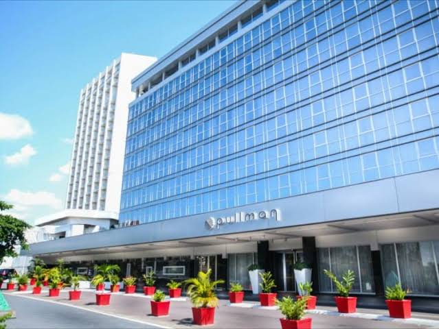
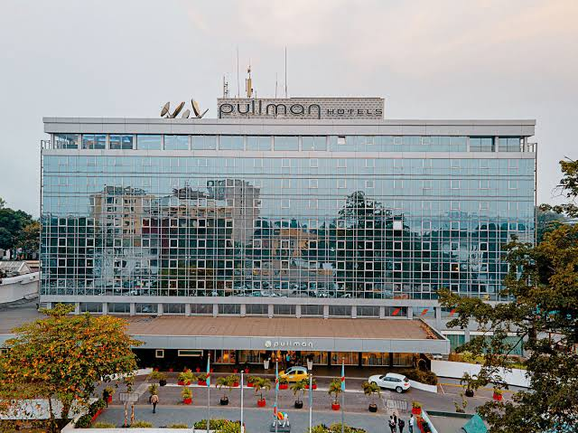
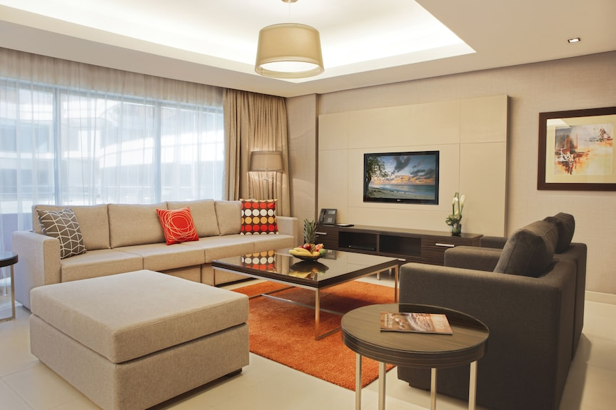
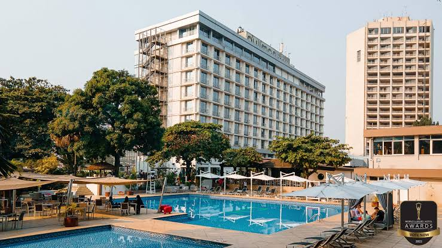

- Pullman Kinshasa
Offrant une vue magnifique sur le fleuve Congo, le Pullman Kinshasa Grand Hôtel est une établissement 5 étoiles situé dans le quartier de Gombe a Kinshasa.il dispose d’une piscine extérieure et une salle de sport. Les chambres et les suites luxueuses et modernes sont dotées de la climatisation, d’une salle de bains privative et d’une télévision par satellite a écran plat.
Plus d'infos    